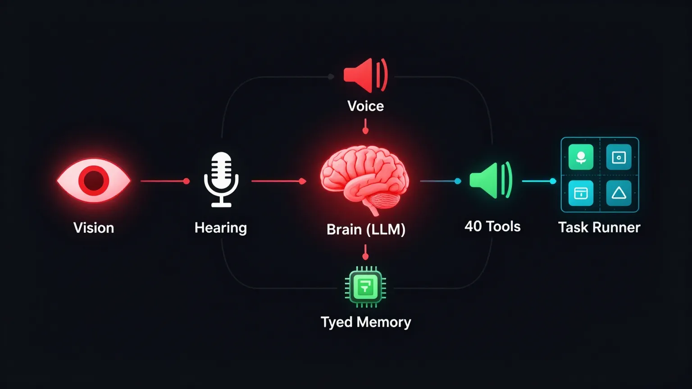

A cross-platform, multimodal AI agent that sees, hears, thinks, speaks, and acts on your machine — with a co-work platform for Claude Code. Free mode available.
Get Started ↓ Interactive Tutorial ↓Six integrated subsystems working in concert — perception, cognition, voice, action, memory, and collaboration.
Webcam vision with HUD overlay — scanlines, corner brackets, real-time analysis. HAL observes your environment.
Continuous microphone listening with voice activity detection and OpenAI Whisper transcription.
Multi-provider LLM brain — GPT-4o, Claude, Gemini, or Ollama (free) — with function calling and 40-tool agent layer.
Three voice engines — Edge TTS (free), ElevenLabs (premium), XTTS (local voice cloning). Switchable at runtime.
40 OS-level tools — shell commands, file operations, app control, web search, clipboard, screenshots, AppleScript automation.
Background task runner, artifact workspace, multi-agent orchestration, and cross-agent context handoff with Claude Code.
Six subsystems connected through a multi-provider brain with a 40-tool agent layer.

HAL coordinates work across itself, Claude Code CLI, and Claude Desktop — with shared memory, background tasks, and multi-agent orchestration.
Memories are categorized — facts, decisions, preferences, session summaries. When a Claude Code session ends, context is distilled and pushed to HAL's persistent store. Next session loads where you left off.
Submit long-running coding tasks that execute asynchronously via Claude Code. Real-time progress, configurable concurrency, and cancellation. HAL keeps working while tasks run.
HAL generates interactive artifacts — code, Mermaid diagrams, rendered HTML — in a tabbed workspace panel alongside the chat. Copy, close, or iterate vocally.
Spawn multiple Claude Code agents on parallel tasks — one does frontend, another backend. HAL monitors all agents and detects file conflicts when they overlap.
Run HAL entirely for free with local AI. One toggle in your .env file switches everything to open-source alternatives.
| Layer | Free Provider | Paid Alternative |
|---|---|---|
| Brain (LLM) | Ollama — Llama 3.1, Mistral, Phi-3 | GPT-4o, Claude, Gemini |
| Speech-to-Text | faster-whisper (local) | OpenAI Whisper API |
| Text-to-Speech | Edge TTS (always free) | ElevenLabs, XTTS |
One codebase, auto-detects your OS. No #ifdef, no separate builds — HAL uses the right system commands on every platform.
| Feature | macOS | Windows | Linux |
|---|---|---|---|
| Volume | AppleScript | PowerShell | pactl |
| Notifications | osascript | Toast API | notify-send |
| Clipboard | pbcopy | Get-Clipboard | xclip |
| Screenshot | screencapture | PIL.ImageGrab | scrot / grim |
| Apps | open -a | Start Menu | .desktop files |
| Terminal | Terminal.app | Windows Terminal | gnome-terminal |
Register HAL as an MCP server — Claude Code gains access to webcam, voice, macOS control, and shared memory.
HAL runs on macOS, Windows, and Linux. Pick your platform — same features everywhere.
Python 3.10+, Homebrew (recommended). For free mode: Ollama. For paid mode: an OpenAI API key.
| Key | Required | Purpose |
|---|---|---|
| FREE_MODE=true | Free | Skip all keys — uses Ollama + faster-whisper |
| OPENAI_API_KEY | Paid | GPT-4o brain + Whisper STT |
| ANTHROPIC_API_KEY | Paid | Claude as brain |
| GEMINI_API_KEY | Paid | Gemini as brain |
Click the power button to activate HAL. Grant microphone + camera permissions when prompted.
Python 3.10+ from python.org (check "Add to PATH" during install). For free mode: Ollama for Windows.
Note: If pyaudio fails, install the Visual C++ Build Tools or use pipwin install pyaudio.
Open http://localhost:9000 in your browser. Click power button to activate.
Windows may prompt for firewall access — allow it for localhost only.
Python 3.10+, system audio libraries, and optionally Ollama for free mode.
Click the power button to activate HAL. Ensure PulseAudio/PipeWire is running for audio.
Interact via voice or text. HAL responds with speech and can control your system, run commands, search the web, manage files, and delegate tasks to Claude Code.
Explore real conversation flows, tool chains, and workflows. Click each scenario to see HAL in action — with animated step-by-step breakdowns.
python server.py.
Ask HAL to launch any installed app with AppleScript automation.
HAL reads, writes, searches, and manages files on your Mac.
Volume, brightness, clipboard, notifications, Wi-Fi, battery status.
Search the web and fetch page content in real time.
Run whitelisted shell commands with security guardrails.
Ask about your webcam, screen, or surroundings.
frontend and backend. Both are working. I'll flag any file conflicts.api.py that was resolved.A simulated conversation showing how HAL processes requests — from voice input through tool execution to spoken response.
Your data never leaves your machine. No cloud, no telemetry, no third-party servers. Complete privacy.
Ollama + faster-whisper + Edge TTS. Zero API keys, zero cost. Paid providers optional for premium quality.
macOS, Windows, Linux — one codebase. Auto-detects your OS and uses native system commands.
Not just an assistant — an operations platform. Background tasks, multi-agent orchestration, shared memory with Claude Code.
MIT licensed. Fork it, extend it, make it yours. Every line of code is readable and documented.
Shell, files, apps, web search, clipboard, screenshots, memory, Claude Code delegation — all from voice or chat.
Clone, install, run. HAL handles the rest.
git clone https://github.com/shandar/HAL9000.git && cd HAL9000 && pip install -r requirements.txt
Click to copy